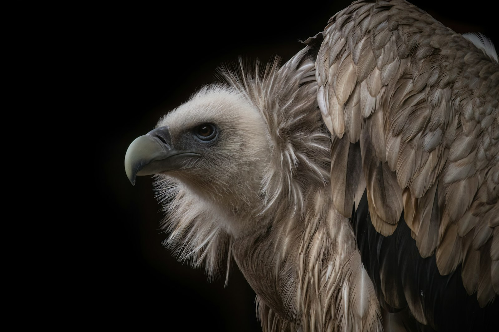

Amazon Field Guide · Wildlife No. 06
Harpy Eagle: Crowned Giant of the Canopy
Nearly a metre tall, with legs as thick as a human wrist and a crown of feathers like a royal headdress—meet the rainforest’s quiet monarch of the air, hunting from branches that are vanishing fast.

Imagine standing under a tree taller than a football oval is long. Somewhere in the green roof above you, a bird the size of a small dog is watching. No thrashing wings. No falcon dive. Just a silent perch, a short burst through the branches, and talons that close like a trap.
The harpy eagle (Harpia harpyja) is the largest eagle in the Americas. Females tip the scales at 6–9 kilograms; males weigh around 4–5 kilograms. Wings stretch almost two metres—short and broad enough to weave between trunks. Amazonian myths cast birds like this as bridges between earth and sky. In science class, we call them an apex predator of the canopy: almost nothing hunts a healthy adult harpy.
A nest on a giant’s shoulders
These eagles need intact lowland rainforest, not thin strips beside farms. Nest trees should be at least 30 metres tall—often kapok or Brazil-nut giants that poke above the canopy like lookout towers. A breeding pair may defend 4,000–6,000 hectares. That is a huge backyard for one family of birds.
They reuse the same nest for decades. The platform can grow more than a metre and a half wide—a double bed of sticks high in the air. Parents raise only one eaglet every two or three years. Life is long (25–35 years in the wild), but replacement is slow. When adults are shot or nest trees fall, populations cannot bounce back quickly.
“When surrounding forest cover dips below about half, adults cannot deliver enough food—and nestlings starve.”
Why the canopy needs its boss
By keeping sloths, monkeys, and large parrots in check, the eagle helps stop any one species from chewing the mid-storey bare. Conservationists call it an umbrella species: protect enough forest for a harpy pair, and you also shelter dozens of quieter animals that need the same unbroken green roof.
Yet the crowned giant is in trouble. The IUCN lists harpy eagles as Vulnerable worldwide, and Critically Endangered across much of Central America. They have vanished from more than 40 percent of their historic range. Their last great stronghold is the Amazon—and its tallest trees are under the saw.
How a harpy hunt works
- Scan from an emergent perch. The eagle sits on a kapok or Brazil-nut giant and watches the mid-canopy for sloths, monkeys, and other tree-dwellers.
- Weave, don’t marathon. Short, broad wings and a long rudder-like tail let it twist between trunks at speeds up to about 80 km/h—sometimes even climbing from below.
- Strike with hydraulic talons. Claws up to 12 centimetres long can squeeze with more than 500 newtons of force—enough to lift prey weighing roughly half the eagle’s own mass.
- Eat what the canopy offers. Diet reviews list at least 102 prey species. Sloths and monkeys make up about half of recorded kills; iguanas, parrots, and porcupines fill the rest.
Five things that make a harpy a survivor
- Short, broad wings and a long tail for weaving through dense forest instead of soaring over open plains.
- A feathered facial disk that funnels sound toward keen ears when leaves block the view.
- Twin foveae in each retina—extra sharp focus for both distant scans and split-second strikes.
- Massive talons that can crush and carry heavy canopy prey.
- Patient parenting: the same huge nest and long childhood give fledglings time to master dangerous flight practice.
Trouble ahead—and reasons to hope
Soy fields and cattle pasture have made about 35 percent of northern Mato Grosso unsuitable for breeding. Camera-trap studies show a harsh rule: when forest cover around a nest drops below roughly 50 percent, chicks starve. Logging of kapok and Brazil-nut giants strands nests in clearings where young birds cannot practise flying. Adults are still shot “out of curiosity” or fear, even though they rarely trouble livestock. Drought and fire make prey scarcer still.
Hope is not gone. The Harpy Eagle Project now watches more than 60 nests, fitting chicks with satellite tags and urging loggers to spare nest trees and buffer strips. Breeding centres in Brazil and Panama have reared over 50 juveniles for release into restored corridors. Indigenous stewardship keeps many of the tallest trees—and the hunting grounds beneath them—alive.
Protecting the crowned giant is about keeping the Amazon canopy whole for every creature under its green wingspan. When the harpy thrives, the forest’s roof is still thick enough to matter for the planet’s climate—and that is a job big enough for all of us.


Odd facts
Word bank
- Apex predator
- — an animal at the top of the food web; nothing regularly hunts it.
- Canopy
- — the upper layer of leaves and branches that forms the rainforest “roof.”
- Emergent tree
- — a giant that sticks up above the rest of the canopy, useful as a lookout perch.
- Umbrella species
- — a species whose protection also shelters many other plants and animals.
- Vulnerable
- — an IUCN category meaning a species faces a high risk of extinction in the wild if threats continue.
- Territory
- — the area a pair defends for nesting and hunting.